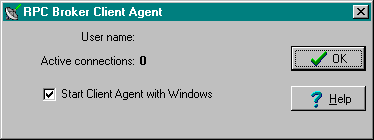
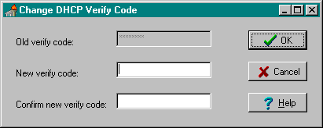
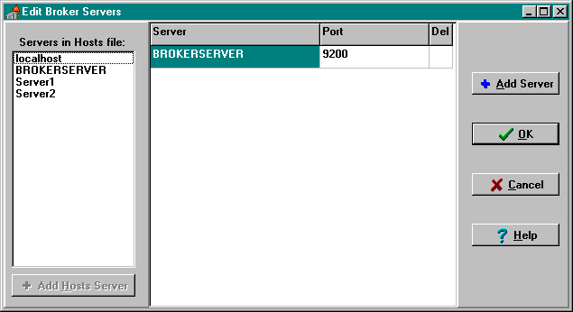
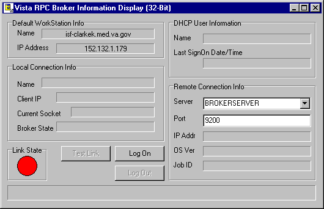
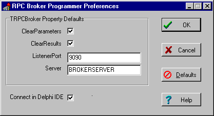
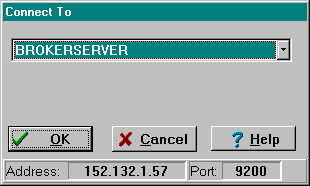

|
RPC BROKER RELEASE NOTES Version 1.1 |
Table of Contents |
|
| RPC Broker Overview |
||
| New Features and Enhancements of the RPC Broker | ||
| RPC Broker Documentation Resources | ||
| RPC Broker Overview |
The Veterans Health Information Systems and Technology Architecture (VISTA) Remote Procedure Call (RPC) Broker (also referred to as "Broker") Version 1.1 is now available. This enhanced Broker software has the following features:
This version of the Broker also includes the Broker Development Kit (BDK). The BDK provides VISTA application developers with the following features:
The RPC Broker component (i.e., TRPCBroker) wraps the functionality of the Broker into a Delphi component resulting in a more modularized and orderly interface. All properties and methods of the Broker are in one component.
New Features and Enhancements of the RPC Broker
This version of the RPC Broker client/server interface provides the following new features and enhancements categorized by user type:
| Please note that several of the new features and enhancements of the RPC Broker are supported by changes made to Kernel in Kernel patch #59 (i.e., XU*8*59). |
End User Features & Enhancements
Topics
Support for Single signon for Multiple User Sessions
This version of the RPC Broker supports a single signon point from a client workstation to the server. Users need only sign on once when accessing both a VISTA roll-and-scroll (e.g., Lab, Pharmacy) and a VISTA client/server GUI-based application (e.g., PCMM, CPRS) on the same workstation, regardless of which application is started first. Once logged into the server, the user will not be asked to enter their Access and Verify codes for any subsequent VISTA applications they may start.
Also, if a user has opened both a VISTA roll-and-scroll session and a client/server application on the same workstation and the roll-and-scroll session times out, the user will still be logged on via the client/server application.
| Single signon is facilitated on the client side by the Broker Client Agent application (clagent.exe) and is only available for Telnet-based sessions in the roll-and-scroll environment. |
The RPC Broker Client Agent program (i.e., CLAGENT.EXE) runs in support of the single signon process (a.k.a. auto signon). This program automatically and continuously runs in the background on the client workstation and normally should not be closed or shut down by the user. An icon (i.e., satellite dish) will be displayed in the System Tray indicating the Broker Client Agent is running. By double clicking on the Client Agent icon, you can see how many active connections are currently open. The dialogue box is displayed below:

New Change VISTA Verify Code Component
This version of the Broker includes a new Change VISTA Verify Code dialog for the client workstation. After a user signs on to the server, if their Verify code has expired, the user is automatically presented with the Change VISTA Verify Code dialog as displayed below. Users will then be able to input and confirm their new Verify code.

| In the future, users will be able to invoke this dialog whenever they choose to modify their Verify code. For now, users who wish to change their Verify code prior to expiration may do so via the Edit User Characteristics option in the roll-and-scroll environment. |
Signon Window can be Customized by Users
Users can now customize the VISTA signon window. When a VISTA program on the client connects to the server, the VISTA signon window is displayed for the user to identify and authenticate himself on the server. This window's System menu has a "Properties..." item. When this item is selected, the user is presented with the following configuration dialogue box:
Users can control the appearance of the signon window by modifying the following characteristics:
System Managers Feature & Enhancements
Topics
Control of the single signon functionality is maintained and administered on the server for both VISTA client/server applications (i.e., GUI) and the roll-and-scroll environment (i.e., terminal sessions). In support of that functionality a new field, AUTO SIGN-ON, was added to both the Kernel System Parameters file (#8989.3) and the New Person file (#200).
| Single signon is not supported on MSM systems. All MSM sites must disable single signon (a.k.a. auto signon). |
New RPC BROKER SITE PARAMETERS File (#8994.1)
This file is used to configure and adjust many characteristics of an RPC Broker installation at a site. This version of the Broker includes a LISTENER field and various subfields. The LISTENER field is a multiple and should contain all Listeners that you plan to run. A simple change of the STATUS subfield from STOPPED to START will start that particular Listener. Conversely, you can STOP a RUNNING Listener.
| DSM sites must have TaskMan started via DCL, if they want to use the RPC BROKER SITE PARAMETERS file (#8994.1) settings to start Listeners on other nodes. |
Load Balancing on Alpha Systems
The Broker, like any telnet or IP process, can be load balanced on DSM Alpha systems if UCX 4.1 is running. The actual steps on configuring UCX for load balancing can be acquired from the ALPHA/AXP technical support group and will not be discussed here.
| For more information on load balancing, please refer to the "Load Balancing on Alpha Systems" topic in Chapter 1 in the RPC Broker V. 1.1 Systems Manual. |
Support for InterSystems OpenM for NT V. 7
This version of the Broker runs on InterSystems OpenM for Windows NT version 7 as well as on Digital Standard M (DSM) and Micronetics Standard M (MSM) for Windows NT. Starting and stopping the Listener under OpenM is the same as it is for DSM. The RPC Broker installation and configuration procedures for OpenM are similar to DSM except where noted.
| For more information on installing the Broker in the OpenM environment, please refer to the RPC Broker V. 1.1 Installation Guide. |
Enhancements and Improvements to the Listener Process
The following enhancements to the Listener process were added to this version of the Broker:
| DSM sites must have TaskMan started via DCL, if they want to use the XWB LISTENER STARTER option to automatically start Listener processes. |
| MSM for NT in version 4.3 introduced a
new generic TCP/IP Listener MSERVER. MSERVER is an actual routine in the Manager's UCI
that runs and listens to all of the ports that you specify in SYSGEN. When a connection is
established to one of these ports, MSERVER launches your code at some TAG^ROUTINE that you
specify. This is similar to VMS' UCX utility. If you are running a Beta version of MSM 4.3
for NT, we encourage you to upgrade to the released version of 4.3. Once you upgrade, you
should stop using the RPC Broker Listener and switch to the MSERVER. If you're successfully using MSERVER, discontinue using the Broker Listener. That means you shouldn't use the STRT^XWBTCP and STOP^XWBTCP entry points or the XWB LISTENER STARTER option. |
Full Backward Compatibility with Broker V. 1.0
Broker-based applications compiled with Broker V. 1.0 (e.g., PCMM) will continue to work with this version of the Broker server routines.
This version of the Broker operates in a 32-bit Windows environment (i.e., client workstations running Microsoft Windows 95 or Windows NT operating systems). However, this version of the Broker will continue to support VISTA applications previously developed for the 16-bit environment (e.g., PCMM).
| Both the RPCBI.DLL and Client Manager
(i.e., CLMAN.EXE) distributed with version 1.0 of the Broker are no longer required with
this version of the Broker. However, the RPCBI.DLL and Client Manager should not be removed. Previous 16-bit Broker-based applications (e.g., PCMM) still require the RPCBI.DLL and Client Manager. |
If IRM wishes to add, modify, or delete servers and ports to be used by the Broker, run the Edit Broker Servers program (i.e., ServerList.EXE) to modify or add Listeners/Ports to the Windows Registry. ServerList.EXE can be copied to any workstation for this purpose.

| The ServerList.EXE program only displays HOSTS file entries; it does not edit the HOSTS file. |
Adding Entries:
You are given two methods of adding new server/port entries to the Registry:
Modifying Entries:
In order to modify or change a server or port, simply place the cursor in the appropriate
Server or Port field and make the change.
Deleting Entries:
In order to delete a pre-existing entry, just click in the Del column. An asterisk appears
in the Del column signifying a deletion. Another click toggles the deletion off.
This version of the Broker includes a new diagnostic/troubleshooting tool for the client workstation. This tool can be used to verify and test the Broker client/server connection and signon process. The dialogue box is displayed below:

This program (i.e., RPCTEST.EXE) also displays specific information about the client workstation that can be useful when trying to diagnose a problem with or to test the Broker.
It displays the following information:
| Link State Indicator Color | Status of Connection |
RED |
No link/connection |
YELLOW |
Attempting link/connection |
GREEN |
Successful link/connection |
| Context-sensitive help is available with the RPCTest.EXE program by pressing the F1 key. |
Developer Features & Enhancements
The 32-bit version of the Broker Development Kit (BDK) is now available and included with the release of version 1.1 of the RPC Broker.
For those developers who received the preview BDK released in October of 1995, many of the following features are either new or enhancements to the preview BDK:
Topics
Enhanced Buffer Clearing and Timeouts on the Client
Previously, if a remote procedure call failed to successfully complete due to a timeout on the client, the buffer on the server would contain data from the uncompleted call. A timeout on the client doesn't generate a network error that will automatically clear the buffer. Since there is no mechanism to "flush" or empty the buffer, the data from the next RPC call would be corrupted.
This version of the Broker solved the timeout/buffer problem in two steps:
Distributed with this version of the RPC Broker is the XWB GET VARIABLE VALUE RPC. Developers can call this RPC to retrieve the value of any M variable in the server environment.
Support for New M Standard Error Trapping
This version of the Broker uses the new Kernel error trap, which now records stack information and NEWed variables.
Creation of an MSM Null Device
An MSM null device will be used to catch all inadvertent WRITEs in RPCs, specifically, those in "ID" nodes of files
This version of the Broker operates in a 32-bit Windows environment only (i.e., client workstations running Microsoft Windows 95 or Windows NT operating systems). It provides programmers with the capability to develop new VISTA client/server software using the Broker Delphi component (i.e., TRPCBroker) in the 32-bit environment. To develop VISTA applications in a 32-bit environment you must have Delphi V. 2.0 or greater. This version of the RPC Broker component will not allow you to develop applications in Delphi V. 1.0. However, the Broker routines on the M server will continue to support VISTA applications previously developed and compiled for the 16-bit environment (e.g., PCMM).
| Please note that version 1.1 of the Broker supports Delphi V. 3.0 as well as Delphi V. 2.0. However, the next version of the Broker will no longer provide support for Delphi V. 2.0. |
The TRPCBroker Delphi component provides Delphi developers with an easy, object-based access to the Broker. It is compatible with the Delphi object oriented (OO) environment. This component, when placed on a Delphi form, allows you to connect to the server and reference M data within Delphi's Integrated Development Environment (IDE). It makes a Delphi form and everything on it "data aware".
TRPCBroker Properties
Version 1.1 of the TRPCBroker component provides the following set of design-time and
run-time properties:
| ClearParameters | ListenerPort | RPCTimeLimit (New, available at run-time only) |
| ClearResults | Param (available at run-time only) |
RPCVersion (New) |
| Connected | RemoteProcedure | Server |
| DebugMode | Results |
| For a complete description of the RPC Broker properties, please refer to the Online RPC Broker Developer's Guide (i.e., BROKER.HLP). |
| For a complete description of the RPC Broker methods, please refer to the Online RPC Broker Developer's Guide (i.e., BROKER.HLP). |
| The connect and disconnect functionality that was previously provided by the DLL has now been incorporated with the Broker component itself. This allows VISTA applications to be independent of the DLL and its restrictions. |
RPC Broker Programmer Preferences Program
This version of the Broker includes a new developer tool for the client workstation (i.e., BrokerProgPref.EXE). The dialog box is displayed below:

This tool allows developers to initialize the default settings for the following properties of the TRPCBroker component:
This program also gives developers the option of setting the "Connect in Delphi IDE" Most of the time, this setting should be checked. It will allow developers to connect to the server using the TRPCBroker component while designing the application in the Delphi Integrated Development Environment (IDE).
RPC Broker Context-Sensitive Online Help
This version of the Broker provides online
context-sensitive help (i.e., BROKER.HLP) for the TRPCBroker component and its associated
DLL exported procedures and functions. Select the component on a form, or highlight a
particular procedure or function, and press the F1 key to get help on that item.
The online help also includes other related topics for IRM and the Broker developer (e.g.,
Tutorials, RPC information, Troubleshooting and Debugging tips, etc.).
Encryption and Decryption Functions
This version of the Broker provides developers with the capability to encrypt and decrypt data as it is passed back and forth from the client to the server. Developers can use the encryption and decryption functions as implemented by Kernel and the RPC Broker. These encryption functions can be used for any communication between the client and the server where encryption is desired.
The GetServerInfo function obtains the end-user's
target server and port. Use this function to set the TRPCBroker component's Server and
ListenerPort properties before connecting to the server.
If there is more than one server/port to choose from, GetServerInfo displays an
application window that allows users to select a service to connect to:

This version of the Broker supplies the following M emulation functions:
Improved Robustness and Efficiency of the Broker
We have made several improvements throughout the Broker to help reduce, if not eliminate, Broker-related errors and to improve the efficiency and error handling of the Broker:
Debugging/Troubleshooting Your Application
Beside the normal debugging facilities provided by Delphi, you can also invoke a debug mode (i.e., TRPCBroker components DebugMode property) so that you can step through your code on the client side and your RPC code on the M server side simultaneously. In order to help isolate a problem, merely set the DebugMode property to true on the client and add any break points in the routines being called on the server. Just step through the code on your client and, simultaneously, step through the code on the server side for any RPCs that your client calls.
Dynamic Link Library (DLL) Interface
This version of the Broker provides a new set of
Dynamic Link Library (DLL) functions that allow applications written in any MS
Windows-based development environment (e.g., Borland's Delphi, Borland C++, Microsoft
Visual Basic, and other COTS products), to take advantage of all the features offered by
the Broker component. This reflects VISTA's continued movement toward open systems that
support multiple GUI and client front-ends.
The Dynamic Link Library (DLL) functions act like a "shell" around the Delphi
TRPCBroker component and provide developers with an easy function-based access to the
Broker component. These functions allow GUI and client front-end applications written in
Borland's Delphi and other COTS products to take advantage of all the features that the
Broker offers. All of the communication to the server is handled by the TRPCBroker
component accessed via the DLL interface.
| The BAPI32.DLL contains all of the 32-bit Broker DLL functions. It provides an interface to the Broker component. |
RPC Broker Documentation Resources
A full set of documentation will be provided with the RPC Broker software package. Readers who wish to learn more about the RPC Broker should consult the following:
Broker documentation is made available online, on
paper, and in Adobe Acrobat Portable Document Format (PDF). The .PDF documents must be
read using the Adobe Acrobat Reader that is freely distributed by Adobe Systems
Incorporated that is available at the following web site:
http://www.adobe.com/
| For more information on the use of the
Adobe Acrobat Reader, please refer to the "Adobe Acrobat Quick Guide" at the
following URL: http://www.vista.med.va.gov/softserv/infrastr.uct/acrobat/index.html |